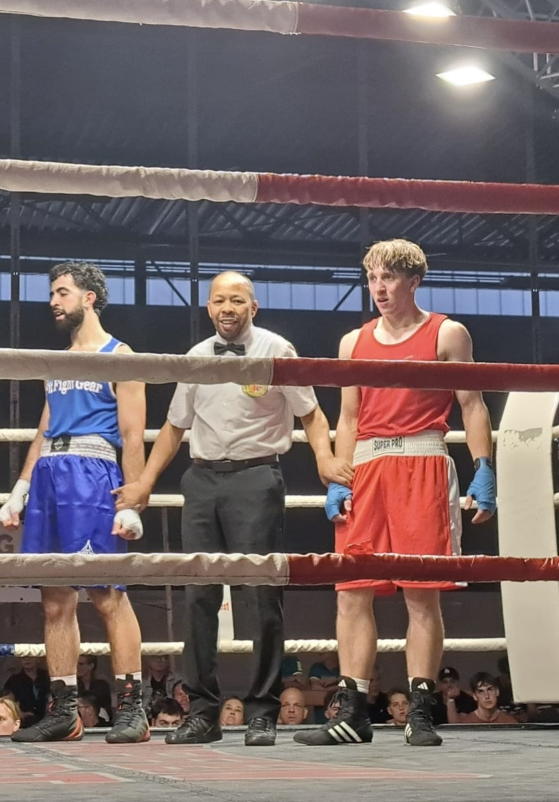
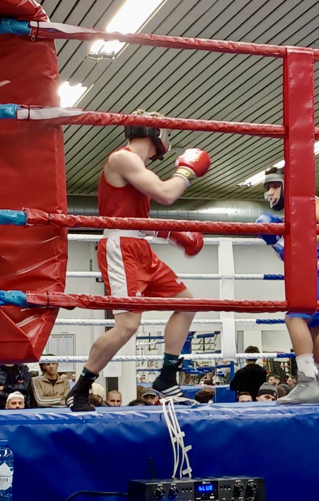
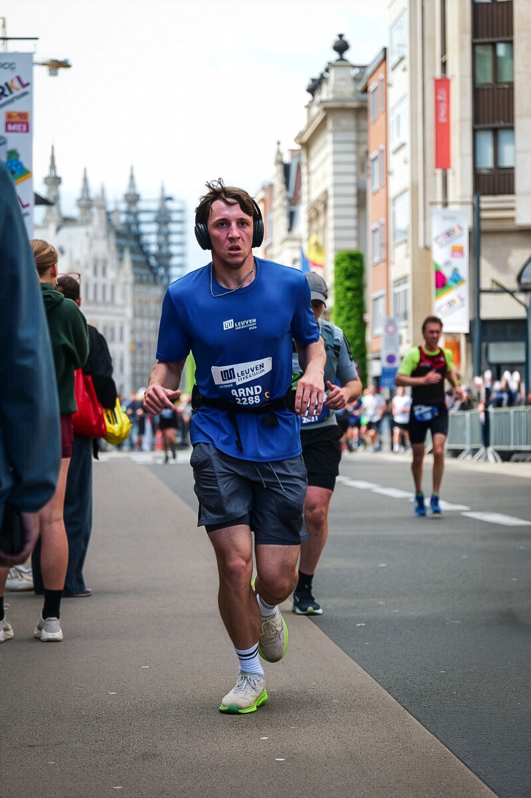

Branding Sinap
Volledig brandbook van Sinap, mijn personal brand als graphic designer.
Graphic designer & Brand designer — Student Digitale Vormgeving
Student uit Tienen. Interesse in branding, graphic design en UI/UX.
Stagezoekend voor WPL3 & WPL4.
Als student Digitale Vormgeving haal ik energie uit het ontwerpen van visuele content die mensen aanspreekt. Ik experimenteer graag met nieuwe stijlen en digitale technieken en ben altijd op zoek naar manieren om mijn vaardigheden te verbeteren. Samenwerken en creatief meedenken zijn voor mij vanzelfsprekend.
Ik studeerde eerst Lichamelijke Opvoeding en Bewegingswetenschappen aan de KU Leuven. Creativiteit en design hebben mij altijd geboeid, waardoor ik uiteindelijk mijn passie heb gevolgd richting digitale vormgeving.
UI/UX, Graphic design, Branding
HTML, CSS, JavaScript, SQL
Selectie van mijn leukste projecten.
Volledig brandbook van Sinap, mijn personal brand als graphic designer.

Affiche in A4-formaat voor de modeshow van Bijoutiful te promoten.

Logo voor Tuinwerken Sinap bv. Dit is een bedrijf dat tuinonderhoud en tuinaanleg doet, maar ook grondwerken en afbraakwerken.

Eigen futuristic font ontworpen.

Mijn persoonlijk CV.

Traditioneel kaartspel in het thema van de Noorse mythologie voor een viking brasserie in Noorwegen.

Volledig brandbook voor pommelien Thijs.
Ruimte voor 150-400 woorden — beschrijf hier de uitdaging, context en doelstellingen van de case. Voorbeeldinhoud: Deze case onderzoekt de gebruikersbehoeften voor een lokale dienstverlener en ontwikkelt een digitale oplossing om de toegankelijkheid en conversie te verbeteren. Het project omvat research, wireframes, high-fidelity UI en een werkend prototype.
Ruimte voor 150-400 woorden — mijn rol: front-end ontwikkeling, interactieontwerp, visual design en projectcoördinatie binnen het team. Ik implementeerde componenten, verzorgde de responsive layout en schreef documentatie voor overdracht.
Ik boks regelmatig en ga vaak lopen — beiden helpen mij om mentaal en fysiek scherp te blijven. Boksen geeft me discipline en focus, terwijl hardlopen ruimte biedt om ideeën te verwerken en energie op te laden.



Eindreflectie, opdrachten en downloadlinks.
Reflectie over proces en resultaten.
Download PDF